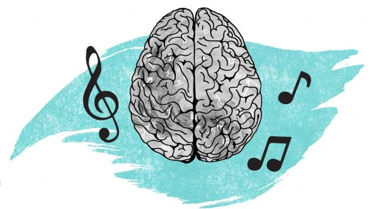

La música ¿Tiene efectos en nuestro cerebro?
Resumen
Este trabajo de investigación surgió mediante una pregunta, la cual fue tomando cada vez más importancia, La música ¿Tiene efecto en nuestro cerebro? Con el fin de responder a esta inquietante pregunta, sobre cuáles eran los efectos (positivos o negativos) que este género artístico provoca en nuestro cerebro, se llevó a cabo una investigación de diversas fuentes (Editoriales de artículos científicos, informes médicos, testimonios escritos de médicos especialistas en el tema, entre otros) además de entrevistas tanto como a un alumno junto con una profesora, los cuales tienen raíces en este tema y se manejan en el ámbito musical. Como es de esperarse en toda la investigación se llegó a la misma conclusión, la música si genera un gran impacto en nuestro cerebro, creando estímulos, liberando hormonas, entre otras cosas, sin duda alguna la música tiene una gran importancia para la vida y la civilización humana.